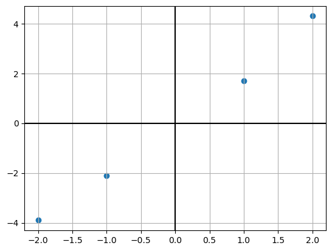
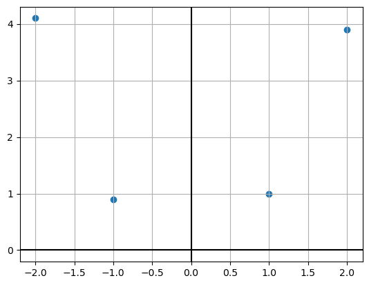

import numpy as np
import matplotlib.pyplot as pltWeek 5: Linear Regression: Least Squares and Kernel Regression
Colab Link: Click here!
Linear Regression Algorithm
Given a dataset \{x_{1} ,\dotsc ,x_{n} \} where x_{i} \in \mathbb{R}^{d}, let \{y_{1} ,\dotsc ,y_{n} \} be the labels, where y_{i} \in \mathbb{R}. \begin{equation*} \mathbf{X} =\begin{bmatrix} -2 & -1 & 1 & 2 \end{bmatrix} \quad \mathbf{y} \ =\ \begin{bmatrix} -3.9\\ -2.1\\ 1.7\\ 4.3 \end{bmatrix} \end{equation*}
X = np.array([[-2,-1,1,2]])
y = np.array([[-3.9,-2.1,1.7,4.3]]).T
plt.scatter(X, y)
plt.grid()
plt.axhline(c='k')
plt.axvline(c='k');
Optimizing the Error Function
The minimization equation can be rewritten in the vectorized form as, \begin{equation*} \min_{\mathbf{w} \in \mathbb{R}^{d}}\frac{1}{2} ||\mathbf{X}^{T}\mathbf{w} -\mathbf{y} ||_{2}^{2} \end{equation*} Let this be a function of \mathbf{w} and as follows: \begin{align*} f(\mathbf{w} ) & =\underset{\mathbf{w} \in \mathbb{R}^{d}}{\min} \frac{1}{2} ||\mathbf{X}^{T}\mathbf{w} -\mathbf{y} ||_{2}^{2}\\ f(\mathbf{w} ) & = \frac{1}{2} (\mathbf{X}^{T}\mathbf{w} -\mathbf{y} )^{T} (\mathbf{X}^{T}\mathbf{w} -\mathbf{y} )\\ \therefore \triangledown f(\mathbf{w} ) & =(\mathbf{XX}^{T} )\mathbf{w} -(\mathbf{Xy} ) \end{align*} Setting the above equation to zero, we get \begin{align*} (\mathbf{XX}^{T} )\mathbf{w} -(\mathbf{Xy} ) & =0\\ (\mathbf{XX}^{T} )\mathbf{w}^{*} & =\mathbf{Xy}\\ \therefore \mathbf{w}^{*} & =(\mathbf{XX}^{T} )^{+}\mathbf{Xy} \end{align*} where (\mathbf{XX}^{T} )^{+} is the pseudo-inverse of \mathbf{XX}^{T}.
X = np.vstack((np.array([[1,1,1,1]]),X))
Xarray([[ 1, 1, 1, 1],
[-2, -1, 1, 2]])w = np.linalg.pinv(X@X.T)@X@y
warray([[0. ],
[2.02]])Using Gradient Descent
As we know w^* is the solution of an unconstrained optimization problem, we can solve it using gradient descent. It is given by, \begin{align*} w^{t+1} &= w^t - \eta^t \bigtriangledown f(w^t) \\ \therefore w^{t+1} &= w^t - \eta^t \left [ (XX^T)w^t - (Xy) \right ] \end{align*} where \eta is a scalar used to control the step-size of the descent and t is the current iteration.
eta = 1e-1
w_grad = np.zeros((X.shape[0], 1))
epochs = 1
for i in range(epochs):
w_grad = w_grad - eta*((X@X.T)@w_grad - X@y)
print(w_grad)[[0. ]
[2.02]]y_pred = w_grad.T@Xplt.scatter(X[1], y)
plt.plot(X[1], y_pred.T, c='r')
plt.grid()
plt.axhline(c='k')
plt.axvline(c='k');
Kernel Regression Algorithm
Given a dataset \{x_{1} ,\dotsc ,x_{n} \} where x_{i} \in \mathbb{R}^{d}, let \{y_{1} ,\dotsc ,y_{n} \} be the labels, where y_{i} \in \mathbb{R}. \begin{equation*} \mathbf{X} =\begin{bmatrix} 1 & 2 & -1 & -2 \end{bmatrix} \quad \mathbf{y} \ =\ \begin{bmatrix} 1\\ 3.9\\ 0.9\\ 4.1 \end{bmatrix} \end{equation*}
X = np.array([[1,2,-1,-2]])
y = np.array([[1,3.9,0.9,4.1]]).T
X = np.vstack((np.array([[1,1,1,1]]),X))plt.scatter(X[1], y)
plt.grid()
plt.axhline(c='k')
plt.axvline(c='k');
Using Kernel Regression
Let’s use the polynomial kernel of degree of two. By applying the kernel function to the dataset, we obtain, \begin{aligned} \mathbf{K} & =\left(\mathbf{X}^{T}\mathbf{X} +1\right)^{2} \end{aligned}K = (X.T@X+1)**2
Karray([[ 9, 16, 1, 0],
[16, 36, 0, 4],
[ 1, 0, 9, 16],
[ 0, 4, 16, 36]])Let \mathbf{w}^{*} =\mathbf{X\alpha }^{*} for some \mathbf{\alpha }^{*} \in \mathbb{R}^{n}. \begin{align*} \mathbf{\alpha }^{*} =\mathbf{K}^{-1}\mathbf{y} \end{align*}
alp = np.linalg.pinv(K)@y
alparray([[-0.18130556],
[ 0.17072222],
[-0.17980556],
[ 0.17372222]])Let X_{test} \in R^{d \times m} be the test dataset. We predict by, \begin{align*} w^*\phi(X_{test}) &= \sum _{i=1} ^n \alpha_i^* k(x_i, x_{test_i}) \end{align*} where \alpha_i^* gives the importance of the i^{th} datapoint towards w^* and k(x_i, x_{test_i}) shows how similar x_{test_i} is to x_i.
y_pred = K.T@alp
y_predarray([[0.92],
[3.94],
[0.98],
[4.06]])X_test = np.linspace(-2.5, 2.5).reshape((1,-1))
X_test = np.vstack((np.ones((1,50)),X_test))
K_test = (X.T@X_test+1)**2
y_test = K_test.T@alp
plt.scatter(X[1], y)
plt.plot(np.linspace(-2.5, 2.5).reshape((-1,1)), y_test, c='r')
plt.grid()
plt.axhline(c='k')
plt.axvline(c='k');